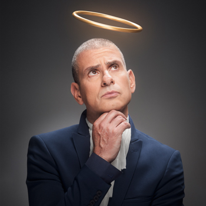

איל קיציס
Local time:
הקדמה
איל קיציס (נולד ב־7 בינואר 1969) הוא שחקן, קומיקאי ומנחה טלוויזיה ישראלי, ידוע בעיקר כמנחה תוכנית הסאטירה ארץ נהדרת מאז תחילת שידוריה ב-2003.
מהלך הקריירה
קיציס עבד כרעיונאי במשרד הפרסום גיתם BBDO[1]. הוא החל את דרכו בתקשורת בשנת 1993, כמנחה בטלוויזיה החינוכית בתוכניות "זומביט" ו"תיק-תק". באותם ימים החל להופיע גם כסטנדאפיסט במועדון הסטנד-אפ הוותיק "קאמל קומדי קלאב". במקביל כתב את פינת ההומור במדור "ציפורה" של עיתון "חדשות" ולאחר מכן "העיר". לאחר שסיים את עבודתו בעיתון, הוא הוציא יחד עם דנה דרבינסקי ספר בדיחות בשם "אחד, לא חשוב מאיזה עדה" (1999). פריצתו הגדולה של קיציס התרחשה בשנת 1999 כשהנחה את התכנית "חיים משוגעים", ולאחר מכן הנחה עם טל פרידמן את תוכנית האירוח ההומוריסטית "חלומות בהקיציס", ששודרה במסגרת שידורי קשת בערוץ 2. במקביל הנחו השניים תוכנית רדיו בשם "ציפורי לילה שרוטות" בגלי צה"ל.
עם עליית ערוץ ביפ ב־HOT, החלו קיציס ופרידמן להופיע ב"לגעת באוכל" (2001), תוכנית פרודיה על טלנובלות, ולאחר מכן ב"החטא ועונשו" (2002), שעשועון טלוויזיה הומוריסטי. בנוסף הנחה קיציס בביפ את התוכניות "הדרבי הגדול" (2003) עם אלי ומריאנו ואת "האקדמיה לצחוק" (2004) עם עלמה זק.
בשנת 2003 החל להופיע בתפקידו המוכר ביותר: מנחה תוכנית הטלוויזיה הסאטירית "ארץ נהדרת", בתחילה לצד טל פרידמן, אורנה בנאי, אלי פיניש, מריאנו אידלמן, דב נבון ועלמה זק, ובהמשך עם קומיקאים נוספים, ובהם אסי כהן, יובל סמו, מאור כהן, שני כהן, ערן זרחוביץ', ירון ברלד, רועי בר נתן, ליאת הר לב ותום יער. התוכנית זכתה להצלחה, הן מצד המבקרים והן מצד הקהל. קיציס גם שימש בעונות הראשונות כקריין בסרטונים של הסדרה, ולעיתים רחוקות אף גילם דמויות במערכונים, ביניהן הנסיך ויליאם ויהונתן גפן.
בקיץ 2007 החל להנחות בערוץ 2 את שעשועון הטלוויזיה "האם אתה חכם יותר מתלמיד כיתה ו'?". באוגוסט 2007 שיתף פעולה עם טל פרידמן בתוכנית הידע "הידוענים" בערוץ לוגי, שבה גילם את דותן פרומר, עורך הסדרה ומעריץ נלהב של שנות ה־80, וכן דמויות פיקטיביות המקורבות לידוענים, כמו גברת גילה, אשת החברה הגבוהה, דוקטור וינר, סגן־אלוף קיש, מאיה ורדית המעריצה הסדרתית ועוד.
בשנת 2010 גילם את אלוהים בסרט של חבורת "ארץ נהדרת" "זוהי סדום", ושיחק בתוכנית "מעצר בית" יחד עם טל פרידמן.
בשנת 2011 השתתף בתוכנית סאטירה נוספת עם טל פרידמן, "גם אנחנו רוצים תוכנית תחקירים".
בקיץ 2014 הנחה תוכנית אירוח בשם "תכנית קיציס" בערוץ 2, בערבי שבת. ב־2016 הנחה את התוכנית "עוד כותרות" (תכנית ספין אוף לפינת החדשות שלו מ"ארץ נהדרת").
ב־2017 הנחה שעשועון טריוויה בשם "מי יכול על ישראל" במסגרת שידורי קשת בערוץ 2.
באפריל 2019 פתח ערוץ יוטיוב בשם "קיציס", ובו החל לפרסם סרטונים קומיים במגוון נושאים.
בשנת 2003 החל קיציס לשמש הפרזנטור של חברת "קווי זהב". הוא נשאר בתפקיד גם לאחר שהחברה עברה שינויי בעלות ושינויים מבניים, ובשל כך היה הפרזנטור של חברת "פרטנר"[2], עד לשנת 2020.
בשנת 2019 חזר קיציס לקיים מופעי סטנדאפ בתיאטרון הבימה.
בשנת 2021 השתתף בתוכנית הטלוויזיה "השמרטפים" בכאן חינוכית.
החל משנת 2021 קיציס הוא הפרזנטור של חברת כלל ביטוח.
חייו האישיים
היה נשוי לדלית ויכסלבאום, יחצ"נית ערוץ 10 ואחותה-התאומה של מגישת הטלוויזיה שרון כידון. ב-2009 נישא בשנית, למגישת החדשות טלי מורנו[3]. לזוג שני בנים ובת, והם מתגוררים בהרצליה.
קיציס מתנדב בעמותת "חיים" – למען ילדים חולי סרטן בישראל.
הוא חובב ספורט, אוהד את קבוצת הפועל תל אביב ואף שידר משחקי טניס בערוץ הספורט.
קיציס התפקד למפלגת העבודה, והביע את תמיכתו הפומבית במפלגה בריאיון עימו לקראת בחירות 2013[4].
